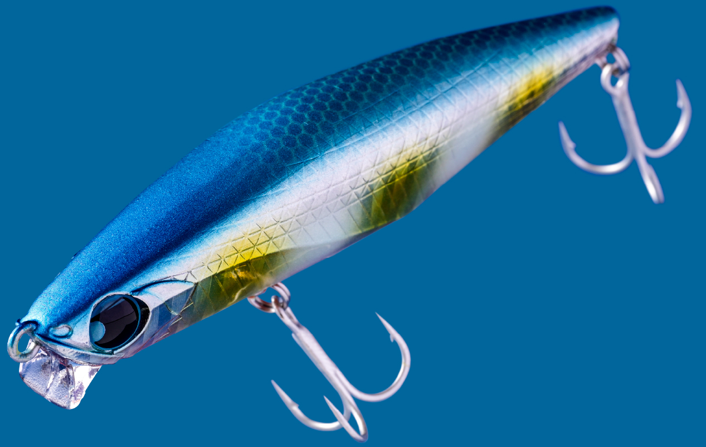
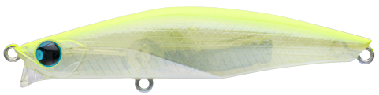
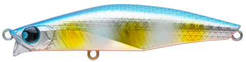
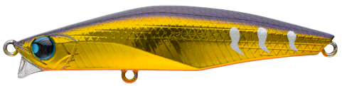
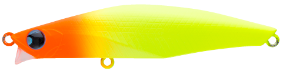

バンク82S HEAVY
（BANQ 82S HEAVY）
バンク82S HEAVYはPOP SEA CREW（ポップシークルー）のリップ付きシンキングペンシルです。
バンク82Sのヘビーウェイトモデルで、同じ82mmのまま22gに重さを増やし、より遠くの魚を狙えるようにしたモデル。ショートリップが着水直後から水をつかみ、射程距離が伸びてもアクションとレンジをキープします。

画像出典:POP SEA CREW公式HP
スペック
- メーカー
- POP SEA CREW（ポップシークルー）
- タイプ
- シンキング（リップ付きシンキングペンシル）
- 全長
- 82mm
- 自重
- 22g
- レンジ
- 50〜100cm
- フック
- #6
- リング
- #3
- アクション
- テールスイング
- ターゲット
- シーバス
- 価格
- 1,800円（税込1,980円）
▼今すぐチェック

バンク82S HEAVYの特徴
82Sのシルエットのまま、遠くて深いレンジまで届くヘビーウェイトモデル
-
射程距離を伸ばすヘビーウェイト
同じ82mmのまま22gに重さを増やし、82Sでは届かない遠くのポイントまで投げられます。狙える範囲が大きく広がります。
-
ショートリップで流されにくい
飛ぶほどラインが風の影響を受けやすいシンペンの弱点を、ショートリップで解決。着水直後から水をつかみ、アクションとレンジをキープします。
-
深いレンジをテールスイングで
レンジは50〜100cm。ただ巻きではやや速めのピッチのテールスイング、リフト＆フォールでは揺れながら落ちるアクションで誘えます。
バンク82S HEAVYの使い方
基本はただ巻き。着水後に少し沈めてから巻き始めると、50〜100cmのレンジをやや速めのピッチのテールスイングで引けます。
反応がないときは、リトリーブの途中でロッドをあおってリフト＆フォール。フォール中の揺れるアクションで食わせのきっかけを作りましょう。
バンク82S HEAVYの得意な状況
沖の潮目やブレイクなど、82Sでは届かない遠いポイント。表層に反応がなく、少し深いレンジに魚がいるときや、風が強くてほかのシンペンでは流されてしまうときに向いています。
ワンポイント
同じポイントでも、表層〜60cmを見せたいときは82S、届かない・深いときは82S HEAVYと、同じシルエットのまま距離とレンジで持ち替えられます。
バンクシリーズの使い分け
| モデル | 全長／自重 | 得意な場面 |
|---|---|---|
| 82S | 82mm／14g | 小型ベイト・レンジ10〜60cmの浅めをスラロームで |
| 82S HEAVY | 82mm／22g | 82Sでは届かない遠距離・深いレンジ（50〜100cm）をテールスイングで（本記事のモデル） |
| 100S | 100mm／27g | 82Sと120Sの中間・ML〜Mクラスロッドに対応 |
| 120S | 120mm／46g | 大型シーバス・高足場や横風の悪条件・広範囲サーチ |
バンクは82S・82S HEAVY・100S・120Sの4モデル展開。ベイトサイズと使うロッドのパワー、狙いたいレンジで使い分けられます。
人気カラー
公式ラインナップから4色を紹介します（カラー名は公式の表記のまま）。

#001 ハッピーレモン定番のレモン系。濁りや夜でもしっかり見せたいときに。

#005 ボラグローボラ系にグローをプラス。イナッコパターンのナイトゲームに。

#007 アンバーゴールドフィニッシュゴールド系のフラッシング。日中や澄み潮でアピールしたいときに。

#009 COHマットチャートマットチャート系。濁りやローライトでシルエットを見せたいときに。
画像出典:POP SEA CREW公式HP
バンク82S HEAVYに似ているルアー
-
 バンク82S
ポップシークルー
詳細はこちら＞
バンク82S
ポップシークルー
詳細はこちら＞
全長82mm・自重14gの同シリーズ。表層〜60cmをスラロームでゆっくり見せたいときに。
-
 モアザン ガルバ87S
DAIWA
詳細はこちら＞
モアザン ガルバ87S
DAIWA
詳細はこちら＞
全長87mm・自重19.3gのリップ付きシンペン。同じくらいの重さで、水面直下を引きたいときに。
-
 モアザン スイッチヒッター85S
DAIWA
詳細はこちら＞
モアザン スイッチヒッター85S
DAIWA
詳細はこちら＞
全長85mm・自重20gのシンキングペンシル。同じクラスの重さで、飛距離重視のシンペンとして。